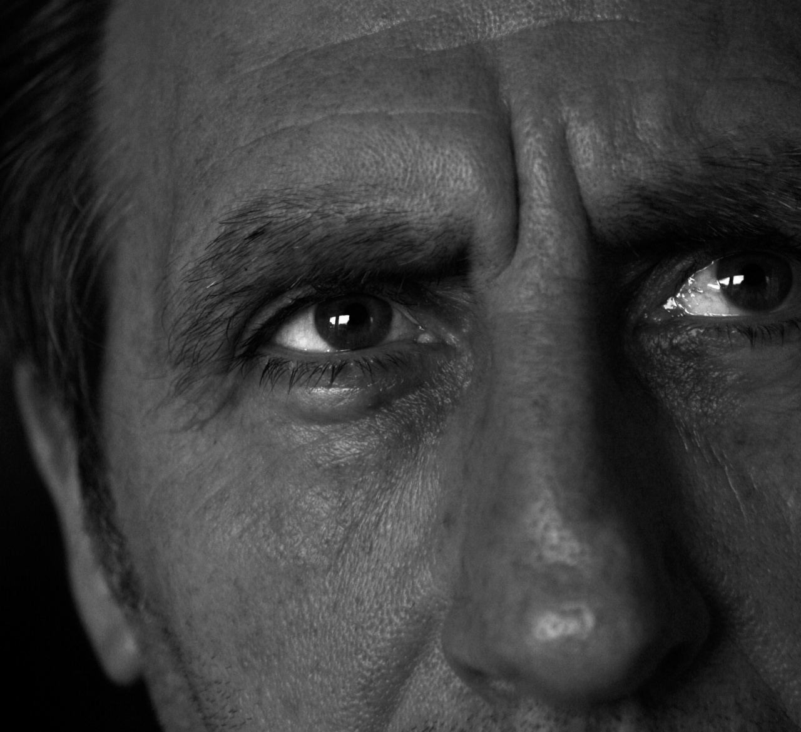

ROGER WAGLAND
Roger Wagland er fødd i Sheffield i England i 1953. I 1978 flytta han til Norge og er no busett på Hareid. Han har også budd i Skottland, Tyskland og Botswana. Møte med ulike menneske og kulturar har vore ei stor inspirasjonskjelde for han.
Roger Wagland arbeider med ulike former for kunst; bilete, musikk, video/film, skulptur og installasjon. Han har kunstutdanning frå Voss kunst- og handverkskule og Oslo tegne- og maleskole. Han har hatt fleire separatutstillingar, har delteke på mange kollektivutstillingar og har hatt fleire andre kunstoppdrag. Den første separatutstillinga hadde han i 1996 i Ulstein kunstlag. Same år var han ein av tre utstillarar for dronning Sonja i Ulsteinvik. Han er også kunstnaren av det første rundkøyringsmonumentet i Møre og Romsdal, "Tidskifte", i Hareid sentrum.
Roger Wagland arbeider med ulike former for kunst; bilete, musikk, video/film, skulptur og installasjon. Han har kunstutdanning frå Voss kunst- og handverkskule og Oslo tegne- og maleskole. Han har hatt fleire separatutstillingar, har delteke på mange kollektivutstillingar og har hatt fleire andre kunstoppdrag. Den første separatutstillinga hadde han i 1996 i Ulstein kunstlag. Same år var han ein av tre utstillarar for dronning Sonja i Ulsteinvik. Han er også kunstnaren av det første rundkøyringsmonumentet i Møre og Romsdal, "Tidskifte", i Hareid sentrum.
Oversikt over utstillingar og kunstoppdrag:
Separatutstillingar:
- 1996 - Ulstein kunstlag, Ulsteinvik
- 1997 - Hareid kunstlag, Hareid
- 2009 - Galleri Brødrene Vik, Syvde
- 2011 - Galleri EogE, Fosnavåg
- 2012 - Ulstein kunstlag, Ulsteinvik
- 2013 - Galleri Wendelboe, Bergen
- 2013 - Alnes fyr, Alnes
- 2018 - Hareid kunstlag, Hareid
Ulike kunstoppdrag:
- 1996 - Utstilling for dronning Sonja, ein av tre kunstnarar, Ulstein kunstlag
- 2000 - Måleri som gåve frå Hareid kommune til nyoppussa Ulstein vidaregåande skule
- 2000 - Måleri som gåve frå Hareid kommune til nyoppussa Ulstein vidaregåande skule
- 2001 - Monument i rundkøyring i Hareid sentrum, ”Tidskifte”, det første rundkøyrings-monumentet i Møre og Romsdal
- 2004 - 7 måleri til Fora Form, design-møbelfabrikk, sine nye kontorlokale i Ørsta
- 2005 - Stemnebiletet til Hareidstemna
- 2007 - Illustrasjon av Øystein Ortens bok ”Rabarbrakrigen”, Det norske Samlaget
- 2011 - 1. plass i Fotodilla-konkurranse ”Gamal”
- 2013 - 1. plass i Fotodilla-konkurranse ”Lys i mørket”
- 2015 - Fotoutstilling på Hareid bibliotek
- 2016 - Digitalt bilete som gåve frå Hareid kommune til den avtroppande rådmannen
- 2016 - 4 maleri, bestillingsverk til nybygget til Stavanger katedralskule
- 2017 - Banner til Hareid frivilligsentral i høve 25-årsjubileet
- 2018 - Stemnebiletet til Hareidsstemna
Kollektivutstillingar:
- 1983 - Vossajazz, Voss
- 1983 - Casa Fernando, Finnegården, Bergen
- 1998 - Kunst- og handverksutstilling, Tennfjord
- 1998 - Sommarutstilling, Hareid kunstlag
- 2000 - Juleutstilling, Hareid kunstlag
- 2001 - Bremanger kunstlag
- 2003 - Juleutstilling, Ålesund kunstforening
- 2004 - Sommarutstilling, Hareid kunstlag
- 2006 - Juleutstilling, Hareid kunstlag
- 2008 - Sommarutstilling, Sandshamn
- 2009 - Sommarutstilling, Ørsta
- 2009 - Juleutstilling, Hareid kunstlag
- 2010 - Sommarutstilling, Galleri Rønning, Skien
- 2011 - Fotoutstilling, Hareid kunstlag
- 2011 - Fotoutstilling, Trebåtfestivalen i Ulsteinvik
- 2014 - Ulstein kunstlag 70 år, Ulsteinvik
- 2016 - Juleutstilling, Hareid kunstlag
- 2018 - Juleutstilling, Ålesund kunstforening, KHÅK
- 2019 - Sommarutstilling, Rundedagen, Runde
Roger Wagland om kunsten sin:
Det har vore viktig for meg gjennom heile livet å uttrykke meg gjennom kunst i ulike former, både i ord, musikk, bilete, film, skulptur og installasjon. Eg har eit sterkt skapande behov, og trivst med å uttrykke meg på ulike måtar.
Kunsten min reflekterer tankar og kjensler og gir uttrykk for korleis eg opplever livet. Eg hentar inspirasjon frå kvardagslivet, naturen, politikk, religion, livssyn og mennesket sitt mangfald av lyster og draumar. Eg kan beskrive meg sjølv som ein filosofisk romantikar som gjerne vil erstatte alle våpen med penslar og musikkinstrument. Fleire av biletemotiva mine er henta frå indre landskap, og viser ulike stemningar og refleksjonar, ofte med ein humoristisk undertone.
ROGER WAGLAND
Roger Wagland was born in 1953 in Sheffield, England. He moved to Norway in 1978 and is today living in Hareid. He enjoys travelling. The diversity of people and cultures inspires his artwork.
Roger Wagland works with various ideas, art forms, and techniques. His art reflects his thoughts and feelings and how he himself experiences life. His inspiration comes from daily life, nature, politics, religion, and from lives, loves, and dreams of men and women. Most of his artwork has a characteristic undertone of psychology, humour and surrealism.
Roger Wagland has had numerous art exhibitions, including one exhibition specially arranged for the Queen of Norway. He is also the artist for the sculpture monument in the central roundabout in Hareid.